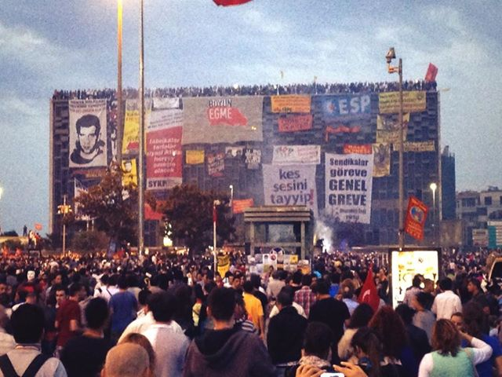
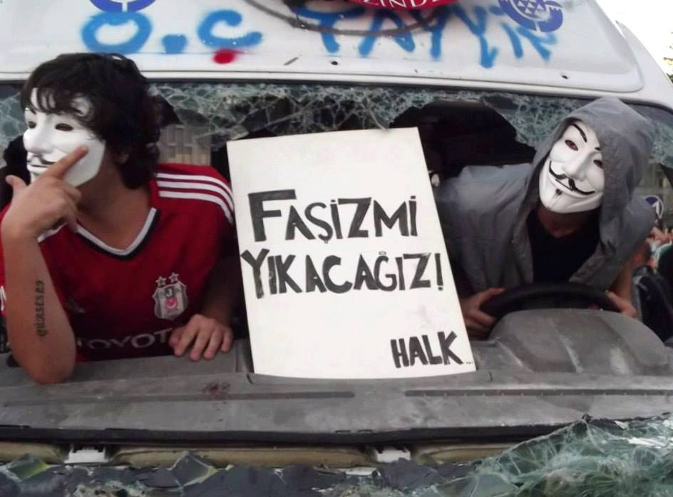

پذيرش > تریبون > مقالات > درسهایی از جنبش اعتراضی مردمی در ترکیه: از نقش شبکه های اجتماعی تا کارگاه های حقوقی (...)


 درسهایی از جنبش اعتراضی مردمی در ترکیه: از نقش شبکه های اجتماعی تا کارگاه های حقوقی خیابانی درسهایی از جنبش اعتراضی مردمی در ترکیه: از نقش شبکه های اجتماعی تا کارگاه های حقوقی خیابانی
25 خرداد 1392 - - نسخه قابل چاپ
تغییر برای برابری - سیما حسین زاده
این روزها شاهد ادامه حضور میلیونی مردم در خیابانهای ترکیه هستیم. اکثر این معترضان متولد دهه 90 میلادی هستند و از آنها به عنوان دهه نودی هایی یاد می شود که با خیزش خود تصویری رنگارنگ و زیبا از شکل های نوین مبارزه به نمایش گذاشته اند. پیام این جوانان در یک جمله این است: "ما مقاومت می کنیم چون نیاز داریم خود را در معرض امتحان قرار دهیم". از طرفی بسیاری از روشنفکران ترکیه نیز شادمانی خود را از این حرکت پنهان نکرده و می گویند: چهره امروز ترکیه در دنیا به دلیل اعتراضات اخیر بسیار زیباتر از چهره 25 سال اخیرش است. جرقه اعتراضات اخیر در ترکیه، روز جمعه 31 ماه مه در ساعات آغازین صبح زده شد. 50 نفر از فعالان زن و مرد جنبش محیط زیست از چند روز قبل برای جلوگیری از تخریب پارک گزی به منظور احداث مرکز خرید در نزدیکی میدان تقسیم استانبول، در این پارک متحصن شده بودند و روز و شب خود را در آنجا می گذراندند.
صبح زود روز 31 ماه مه پلیس با حمله وحشیانه به چادرهای برپا شده توسط فعالان متحصن آنها را زخمی و برخی را دستگیر کرد. مردم ساکن در محله نتوانستند بر چنین خشونتی چشم ببندند و بلافاصله با قابلمه ها و ملاقه هایی در دست به نشانه اعتراض به خشونت پلیس به متحصنین در پارک پیوستند. چند ساعت بیشتر طول نکشید که مردم از مناطق مختلف استانبول جهت اعلام همبستگی با فعالان محیط زیست خود را به پارک رساندند .عصرآن روز به جای 50 نفر، صدها هزار نفر در میدان تقسیم و پارک گزی جمع شدند تا هم از پارک مراقبت کنند و هم خواسته های اجتماعی شان را مطرح کنند. خشونت پلیس در چند روز آغازین حرکت در میدان تقسیم و پارک گزی بسیار خشونت بار بود و نه تنها واکنش برخی مقامات داخلی ترکیه از جمله فرماندار استانبول بلکه اعتراضات جامعه جهانی را نسبت به اعمال خشونت وحشیانه پلیس عیله تظاهرکننده ها برانگیخت. اوج گیری و گسترش اعتراضات به شهرهای دیگر و پوشش خبری جهانی باعث شد که پلیس از میدان تقسیم عقب نشینی کند اما همچنان در محله های دیگر استانبول همچون بشیکتاش، دلما باحچه، قاضی و البته شهرهای دیگر مانند آنکارا، ازمیر، آدانا به سرکوب مردم ادامه داد. 71 شهر در سراسر ترکیه دستخوش اعتراضات و نا آرامی های شبانه روزی شد. حدودا دو هفته به همین منوال گذشت و در ساعات اولیه روز یازدهم ژوئن برابر با بیست و یک خردادماه فرماندار استانبول در قالب چند پیام خطاب به معترضین حاضر در پارک از طریق توئیتر برای آنها روز خوب و خوشی را آرزو کرد و نوشت "کاش من هم می توانستم به عنوان یک شهروند عادی در بین شما باشم". از طرف دیگر گزارشات نشان داد که هزاران نفر از مأموران پلیس ضد شورش به همراه خودروهای زرهی و ماشین های آبپاش فشار قوی در حال حرکت به سوی پارک گزی و میدان تقسیم بودند. پخش این خبر آرامش را از فضای پارک و میدان ربود و بلافاصله کاربران توئیترکه در بین معترضان پارک روز و شب می گذرانند از حسین آونی فرماندار استانبول خواستند تا پلیس را مجبور به ترک محل کند. او نیز در جواب گفت که آنها برای جمع کردن چند گروه حاشیه ای سیاسی تند رو (مارجینال) و جمع آوری پلاکاردها و شعارهای پخش شده در فضای پارک و میدان آمده اند و به زودی خواهند رفت. اما اینطور نشد و علیرغم تشکیل زنجیره انسانی و مقاومت معترضان، استانبول یک روز تمام شاهد شلیک مداوم گاز اشک آور، اسپری فلفل بود. نیروی ضد شورش به چادر های برپا شده در پارک نیز یورش برد. در نتیجه حمله روز 21 خرداد حدود 400 نفر زخمی شدند و به هتلهای مجاور جهت درمان انتقال یافتند. پس از این حملات چند ساعته دیگر مردم معترض در خیابانهای این شهر در یافتند که با یک فرماندار و دونوع رفتار متناقض روبه رو هستند و اعتماد خود را نسبت به مقامات مسئول کاملا از دست داده اند. گفته می شود تا کنون تعداد زخمیها رقمی نزدیک به 4500 نفر بوده که در بین آنها برخی به شدت از ناحیه سر و چشم آسیب دیده اند و 4 نفر نیز جان خود را از دست داده اند.

یک روز بعد از این حمله، معترضان مجدد مشغول برپا کردن چادرهای خود در پارک بودند و تلاش می کردند جریان عادی زندگی را به پارک برگردانند. آقای اردوغان نخست وزیر ترکیه، در دیدار با هیئت پنج نفره ای که علی رغم اطلاعیه ی معترضان پارک مبنی بر بی اطلاعی، هیات نمایندگی تظاهرکنندگان اعلام شده بود، پیشنهاد رفراندوم برای روشن شدن تکلیف پارک را داد. اما اعلام رفراندوم نیز نتوانست معترضان حاضر در خیابانها را به خانه هایشان برگرداند چراکه به گفته چند تن از فعالان باسابقه مدنی-اجتماعی رفراندوم دامی بیش نیست. این فعالان می گویند علاوه براینکه انجام رفراندوم برای چنین مساله ای به لحاظ حقوقی در ترکیه مشکل دارد بلکه بسیاری از مردم معترض در خیابانها اعتقاد دارند انجام این رفراندوم در حکم سرپوش گذاشتن بر بسیاری از نقائص دولت ازجمله فساد مالی و دموکراسی نیم بند ترکیه خواهد بود.
اما با وجود همه اینها بعد از گذشت دو هفته از شروع این اعتراضات هر روز سازماندهی مردم حاضر در خیابانها قوی تر می شود وگروههای جدیدی به این حرکت می پیوندند. در بین این گروهها می توان به فعالان حقوق زنان، فعالان کوئیر، فعالان کارگری، آنهایی که خود را مسلمانان ضد سرمایه داری می نامند، همگرایی طرفداران تیم های فوتبال، فعالان محیط زیست، دانشجویان، هنرمندان و بسیاری دیگر اشاره کرد. نقش شبکه های اجتماعی در گسترده شدن ابعاد اعتراض نیز چشم گیر بود. اردوغان از توئیتر به عنوان یک دردسر یاد کرد و در پی آن نزدیک به 50 نفر از کاربران توئیتردر شهرهای مختلف از جمله ازمیر و آدانا بازداشت شدند. همین امرمعترضان را به تلاش برای افزایش دانش حقوقی کشاند. گروهی از وکلا کارگاه هایی آموزشی حقوقی و کنشگری مدنی در محل تجمعات در شهرهای مختلف برگزار کردند. حاصل این کارگاه ها جزوه هایی شد که در ابعاد وسیع در اینترنت و در کوچه و خیابانها برای آگاهی مردم از حقوقشان توزیع شد.
ساده انگاری ست اگر فکر کنیم همه چیز در یک روز اتفاق افتاد. طبق صحبتهای یاووز ایلهان یکی از سخنگویان پلاتفرم "مقاومت برای تقسیم"، آنها به عنوان فعالان محیط زیست از دو سال پیش در مورد پروژه احداث مرکز خرید در محل پارک گزی اطلاع رسانی کرده و فراخوان عمومی داده بودند. اما مردم موضوع را جدی نگرفته بودند. در حقیقت موج اعتراضی گسترده فعلی حاصل و برآیند مبارزات پراکنده فعالان کارگری، دانشجویی، زنان و دیگر گروهها در طی چند سال اخیر است. از طرف دیگر گویا "اردوغان بعد از سومین بار پیروزی در انتخابات پارلمانی و کسب مقام نخست وزیری ترکیه دچار توهماتی شده مبنی بر اینکه خود را امپراطور دنیای اسلام می پندارد. از این رو تصور می کند قادر است هر طور که فکر می کند همان را در جامعه پیاده کند". این را یکی از تحلیل گران مستقل سیاسی در یکی از برنامه های تلویزیونی می گوید.
درس های جنبش گزی
معترضان حاضر در پارک گزی به ویژه فعالان مدنی در صحبتهای خود از درس هایی یاد می کنند که از این جنبش فرا گرفته اند.
● یکی از این درسها به وجود آمدن همدلی و همبستگی عمیق بین فعالان جنبش های مدنی به ویژه در شهرهای بزرگی همچون استانبول و آنکارا و ازمیر با فعالان مدنی و روزنامه نگاران در مناطق شرقی و کردنشین ترکیه است. در پی اعمال خشونت بی رویه پلیس در روزهای گذشته تقریبا تمامی معترضان حاضر در این حرکت همدل و همصدا اعتراف کرده اند که " ما تازه متوجه شده ایم که طی سی سال گذشته چه بر مردم کرد ترکیه رفته است" ودر نتیجه اعتراف و عذرخواهی خود را مبنی بر فریب خوردن شان توسط رسانه های جهت دار و حاکمیت اعلام کردند. جملات زیر نمونه هایی از این اعترافات است که این روزها به وفور می توان در شبکه های اجتماعی همچون فیس بوک و توئیتر کاربران ترک مشاهده کرد. این دستاورد نکته موفقیت آمیز و خوشایندی ست که در شرایط عادی سال ها وقت می برد حتی اگر دولتی به عمد هم می خواست نمی توانست تک تک افراد جامعه ترکیه را برای به زبان آوردن این جملات متقاعد کند. هر چند مشکل است باور کرد که حاکمیت موجود در ترکیه هرگز دست به چنین کاری بزند، چرا که یکی از بهترین استراتژیهای به کار گرفته شده در ترکیه تا به امروز ایجاد تفرقه بین مردم به اصطلاح غرب و شرق ترکیه بوده است.

● همچنین این روزها از لابلای نوشته ها و گفته های فمینیستهای ترک می توان از کاهش چشمگیر میزان مزاحمت جنسی در خیابانها و فضاهای عمومی خبر داد. مبارزه با مزاحمت جنسی همیشه یکی از مسایل عمده در فعالیتهای جنبش زنان ترکیه بوده است و در واقع کمپین مبارزه علیه خشونت جنسی یکی از عناوین ثابت در فعالیتهای فمینیستها است. اما این روزها با نگاهی به نوشته های آنها می توان متوجه شد که به دلیل وجود همبستگی و همدلی بالا در بین معترضان آزادیخواه میزان مزاحمت جنسی و استفاده از ادبیات سکسیستی به شدت کاهش یافته است. گروههای مختلف فمینیستی ترکیه هر کدام با برپا کردن چادر در محل پارک گزی در عرض این دو هفته توانسته اند ارتباط مستقیم و ارگانیکی با بدنه اجتماعی جامعه شان بگیرند که این برای آنها که معمولا مورد بی اعتنایی رسانه ها قرار می گیرند ، موفقیت بزرگی محسوب می شود. آنها می گویند حالا که فرصتی جهت حضور در خیابانها پیدا کرده اند تا زمانی که دولت دست از بدن ما برندارد همچنان به مقاومت ادامه خواهند داد.
● واکنشهای اردوغان از روز اول این اعتراضات به مثابه اعلان جنگ با معترضان صلح طلب و آزادیخواه حاضر در خیابانهای نزدیک به 25 شهر ترکیه تعبیر و تفسیر شده است. نخست وزیر ترکیه در اولین واکنش خود معترضان را مشتی چاپولجو به معنای غارتگر و آشوبگر خطاب کرد و ضمن تمسخر اعتراضات صلح طلبانه گفت شما با قابلمه و تابه نمی توانید کاری بکنید و سپس راهی یک سفر چهار روزه به مقصد آفریقا شد. هنگام برگشت از این سفر او مورد استقبال سازماندهی شده طرفداران حزب خود با شعار "اجازه بده برویم/تقسیم را له کنیم" در فرودگاه آتاترک قرار گرفت و این بار واکنش تندتری نسبت به رویدادهای اخیر نشان داد. وی گفت من 50 درصد جمعیت این کشور را که به حزب ما رای داده اند این روزها به زور در خانه هایشان متوقف کرده ام . تا کنون تصاویر و عکسهای بسیاری از خیابانها و خشونت زیاد پلیس در ترکیه در سراسر جهان مخابره شده است این در حالی است که اردوغان در اظهاراتی مدعی شد که پلیس ما در حال انجام وظیفه است و ما کشوری دموکرات هستیم. در کل آنچه از صحبتهای آقای اردوغان نسبت به رویدادهای اخیر در ترکیه به دست می آید حاکی از به رسمیت نشناختن این جنبش مردمی ست و یا در پیش گرفتن این موضع طلبکارانه که "ما چه برای این کشور نکرده ایم که عده ای ناراحت شده اند". به موازات این قبیل موضع گیری هامدام در تلاش است که با منتسب کردن این جنبش خیابانی به اپوزیسیون داخل کشور و ارتباط آن با دشمنان خارجی از سیاستهای حزب خود به شکلی مطلق و بی کم و کاست دفاع کند. واکنش های چند روز اخیر اردوغان در قبال معترضان نشان می دهد که مخالفان وی در توصیف او بمثابه شخصیتی " دیکتاتور و فاشیست" چندان به بیراهه نرفته اند.
ارسال به
بالاترین
،
توییتر
،
فریندفید
،
فیسبوک
در همين بخش :
 دهمین دورۀ مراسم تندیس صدیقه دولت آبادی ۱۳۹۲ دهمین دورۀ مراسم تندیس صدیقه دولت آبادی ۱۳۹۲
کارت پستالهایی به بهانهی هشت مارس و به یاد همهی مبارزین راه برابری
بیانیه بیش از 350 تن از مدافعان حقوق زنان به مناسبت روز جهانی زن؛ زنان هر روز فرودستتر میشوند
لباسی که برای تن ما دوخته اند! /اعظم بهرامی
چالشها و چشمانداز فعالیت مدنی زنان
ديگر بخش ها :
طرح یک میلیون امضا
|
مقالات
|
سایت نوشته ها
|
اخبار
|
گزارش كمپين
|
گفت و گو
|
علیه سکوت
|
كوچه به كوچه
|
نامه های شما
|
گزارش ویژه
|
گفتگو با اعضا
|
ویژه سالگرد کمپین
|
تصویر برابری
|
دل آرام علی
|
تریبون
|
مقالات
|
تاریخ شفاهی
|
خارج از چارچوب
|
کتابخانه
|
درباره کمپین
|
کمپین در شهرها
|
کمپین در بند
|
صدای تغییر
|
ویژه 22 خرداد
|
لایحه حمایت از خانواده
|
گالری
|
عشا مومنی
|
امیر یعقوبعلی
|
خدیجه مقدم
|
راحله عسگری زاده و نسیم خسروی
|
پروین اردلان،جلوه جواهری، مریم حسین خواه، ناهید کشاورز
|
زینب پیغمبرزاده
|
سعیده امین، سارا ایمانیان، محبوبه حسین زاده، ناهید کشاورز و همایون نامی
|
احترام شادفر
|
نسیم سرابندی زاده،فاطمه دهدشتی
|
وبلاگ مهمان
|
پرونده خرم آباد
|
دستگیری ها
|
مریم مالک
|
پرستو اللهیاری
|
مهرنوش اعتمادی
|
سمیه رشیدی
|
Other Languages
|
همراهان
|
«فراخوان کمپین ده روز با بهاره هدایت»
| English
|